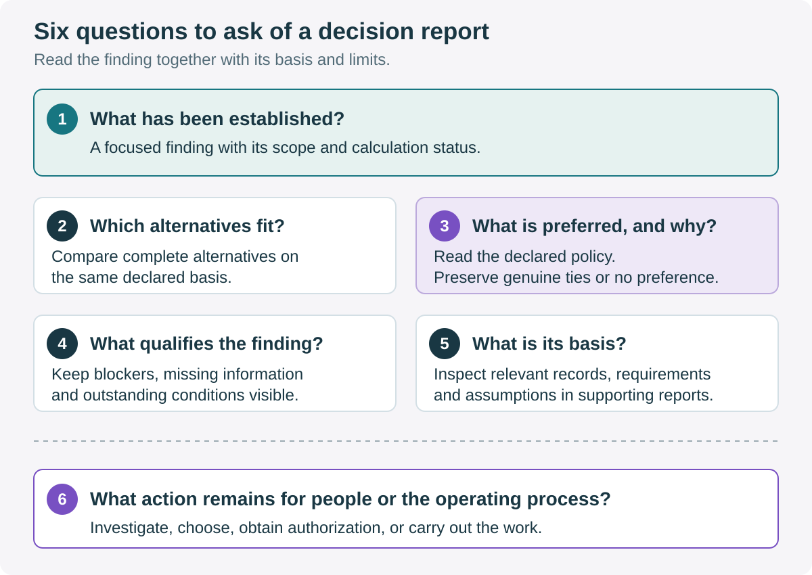
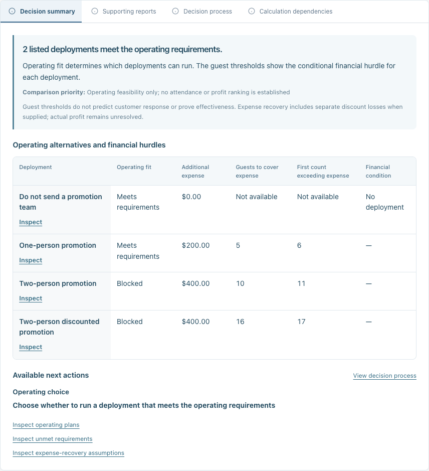

Maya must recommend freight before the booking window closes. Leah must get 120 usable gift kits ready for handoff. Each has a cheaper proposal and a faster one. Paying more without a reason wastes money; waiting for the cheaper response can put the commitment at risk.
Both need an answer they can explain: which complete response meets the requirements, why favor it, and what still needs to happen? A useful decision summary makes that judgment easier to inspect. Its structure also helps a reader recognize whether the same kind of assessment could serve their own business.
Begin with the judgment the reader needs
A freight price answers one question. It leaves others open: whether capacity is sufficient, the booking remains available, permissions cover the current order, and arrival meets the promise. Similarly, a quote for replacement gift-kit inserts leaves open whether the destination also needs repair and whether a fresh rehearsal can finish before handoff.
The comparison therefore needs complete alternatives. An arrangement brings together the choices and supporting conditions needed to assess one complete response. The summary should help someone see which arrangements remain supported and what differentiates them.
Three levels contribute to that reading:
| Level | What it contributes |
|---|---|
| Assessment pattern | Defines the recurring question, evaluation and meaning of the finding. |
| Decision view | Organizes those findings around the reader’s concern, with a route to their supporting detail. |
| Domain application | Supplies the concrete alternatives, records, requirements, priorities and terminology. |
The commitment assessment pattern supplies the shared question in Maya’s and Leah’s cases. Their applications give its alternatives and requirements different business meanings. The view presents the calculated findings; displaying a row does not introduce another business rule.
Read the summary through six questions
Read the finding first, then examine the comparison and its basis. The following key is a reading aid for the examples below. It is not a set of extra controls in the application.

| View element | Question to ask |
|---|---|
| 1 · Focused finding | What has the assessment actually established? |
| 2 · Complete comparison | Which complete alternatives differ in ways that matter? |
| 3 · Declared priority | Why is one passing alternative preferred? |
| 4 · Conditions and blockers | What qualifies the answer or prevents an option? |
| 5 · Supporting reports | Which records, requirements and assumptions support it? |
| 6 · Remaining action | What still needs investigation, a decision or execution? |
A concise screen can answer these questions in different ways. Some conditions appear beside an alternative; others have an inspection link. Supporting reports retain detail about requirements, timing, resources and permissions. The Decision process shows how the findings connect to available responses. Opening either view leaves the calculated answer and business choice unchanged.
Two domains, a recognizable structure
These working examples both use a cost-first policy: meet every recorded requirement, then prefer lower complete expense, then earlier completion. Each has current supporting records and enough time for its cheaper complete response. They have separate inputs, calendars and requirements; the comparison shows equivalent questions rather than identical cases.
Maya · Shipment readiness
Direct is preferred at $4,000, arriving Friday noon. Consolidated also meets the requirements at $5,000, arriving Thursday evening. Backup exceeds the $5,000 spending boundary.

Follow Maya’s shipment decision, including the later cutoff that makes Consolidated the supported proposal.
Leah · Gift-kit readiness
Complete in-house correction is preferred at $300, finishing in 40 minutes. The $400 external package takes 25 minutes. Both fit the one-day window; partial corrections leave a supported fault unresolved.

Follow Leah’s gift-kit decision, including the urgent campaign where the faster package protects the cutoff.
The reusable reading is concrete: inspect the finding, compare complete responses, check the priority, then examine the conditions. Shipment capacity and a gift-kit diagnostic are different kinds of support. A shared display preserves those meanings while making the structure easier to recognize.
The same presentation can carry a different claim
Alex’s street-team decision provides a useful contrast. With five qualified staff available and four required inside, holding or sending one person meets the recorded operating requirements. The one-person deployment costs $200. At $40 retained contribution per genuinely additional guest, with no separate discount loss recorded, five cover the expense and six exceed it under the stated assumptions.


Here the financial figure is a required response threshold. It does not forecast attendance or establish a profit-maximizing deployment. Alex can use the hurdle to judge the commitment, seek evidence about response or hold the team. Read the promotion case to see how staffing and uncertain customer response constrain that judgment.
Recognizing a layout is a starting point. Understanding what each finding establishes makes the report usable.
Keep the distinctions that matter to action
An unavailable answer differs from established infeasibility. Missing inputs, an incomplete search or a stale calculation can prevent a conclusion. A completed assessment establishing that no declared candidate meets the requirements supports a different response: reconsider the constraints, candidates or commitment. An empty display must not silently mean that nothing works.
Feasibility and preference answer different questions. A passing arrangement supplies a supported option. A declared comparison policy may establish a preference among passing options, including a genuine tie. The view should preserve all preferred ties rather than turn display order into a sole winner.
Inspection, selection and execution remain separate. Opening Direct’s requirements inspects its basis. Choosing Direct is a business decision. Obtaining current authorization, securing the reservation and completing delivery require their own operating actions and evidence. The summary supports those steps without claiming they have happened.
Work backward from your own decision
Before designing a screen, write down the judgment it should support. Use these questions with the person responsible for acting:
- What must they decide, and by when? Name the commitment, decision owner and useful response window.
- What finding would justify the next action? Distinguish a possible explanation, a workable plan, a preference and a conditional threshold.
- What is a complete alternative? Include the connected work, resources and timing that make the comparison meaningful.
- Which conditions are mandatory, and which are priorities? Make the basis for eligibility and preference explicit.
- What changed fact could reverse the conclusion? Identify the relevant cutoff, capacity, confirmation or other trigger.
- What support must someone inspect? Preserve each source’s scope, assumptions and unresolved questions.
- What should happen when the answer remains unknown? Give missing information, blocked options and incomplete evaluation appropriate next steps.
If those answers resemble a supported assessment, a shared view can help present its results in your domain. A new question may require additional evidence or modeling: selecting independently feasible shipments does not establish that they can share one truck, and a guest hurdle does not supply a response forecast. From Arrangements to Assessments explains how the assessment defines the conclusion a collection of possibilities can support.
Maya can now explain why Direct is the supported lower-cost proposal while its booking window remains open. Leah can explain why her complete in-house correction is preferred with a day available. Both can identify the changed circumstance that would justify paying more. That is the practical purpose of the summary: a readable connection between the current context, the finding and the work still ahead.